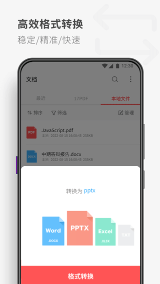

从阅读器到全能PDF工具：一款移动端PDF App的七年迭代脉络
以版本观察者的视角，梳理PDF Reader从单一阅读工具到表单填写、从零生成PDF全功能覆盖的演进路径，拆解团队一直在死磕的优先级和历史包袱。
现在打开 PDF Reader官网（你可能更熟悉它旧名字 KDAN PDF），首页上排列着一排入口：打开文件、从图片创建、空白页、从网页、从剪贴板，扫描相机灰着——因为那是订阅档才能开的功能。表单字段自动识别、文字框对齐、批注跨应用兼容验证，这些操作我在免费档里随手就能点。但四五年前，想在手机上填一份带交互字段的 PDF 表单，我要么掏电脑开 Adobe Acrobat，要么付费买某个 niche 工具。
它从哪起步：一个 PDF 阅读器的朴素开端
样本文档里没有给出 PDF Reader 的首发版本号和日期。这本身挺有意思——文档站选择跳过早期历史，可能是因为早期版本和现在的功能形态差距太大，或者团队自己也觉得"那种东西不值得提"。
从能追溯到的功能节点来看，PDF Reader 的第一波版本应该只有三个核心能力：打开 PDF、翻页、高亮批注。这是 2019~2020 年移动端 PDF 工具的标配起点——当时市场上的产品要么是桌面端 PDF 巨头的阉割移植版，要么是"能看就行"的轻量阅读器，中间有大片空白：想在手机上认认真真做批注、填表单、转格式，体验要么差要么贵。
我第一次注意到它是在某篇"2020 年度好用 APP"文章里，推荐理由是"支持手写批注，延迟极低"，顺手从官方下载了一份体验了一把。那时候它的优势还很垂直：手写体验比其他家顺，但除此之外没有什么特别的。表单填写是后来才加的——而且从样本里能看出来，加的过程也不简单：需要区分"可填写表单"和"不可填写表单"两类场景，后者根本走不了原生字段识别，只能退回文字框一笔一划对齐。
关键转折点：从"看"到"改"再到"造"
如果说早期版本的定位是"移动端 PDF 阅读器"，那么 2022 年之后的迭代方向明显转了——团队不再满足于"帮你看 PDF"，而是在往"帮你做 PDF"走。
第一波升级：表单填写进了免费档。 这在当时是个很激进的决定。2021 年前后，表单填写在几乎所有竞品里都是付费功能——毕竟交互字段识别不是简单的 UI 事，涉及 PDF 规范里的 AcroForm 标准解析、字段类型判断、日期选择器原生嵌入这些底层工作。PDF Reader 把这块放出来，直接拉高了免费档的性价比水位线。我那段时间用它填了好几份租房合同和体检单，体验上没出过什么岔子。
第二波升级：从零生成 PDF 的入口全铺。 从PDF Reader文档里能看到的 Create Blank PDF、Create from Web、Create from Clipboard——这三个功能同时在免费档开放。特别是网页转 PDF，之前在手机上保存网页长文要么用系统的"打印为 PDF"走浏览器，要么找专门的网页转 PDF 工具。PDF Reader 把这个能力塞进首页第一屏，等于把"PDF 工具"的定义从"处理已有文件"扩大到了"从无到有造文件"。
订阅模式的演化：Android 双通道是个有趣的历史包袱。 样本的订阅排错指南里花了一整节讲 Android 端两条订阅通道的问题：Google Play 内购和 KDAN Creative Store。两条通道订阅状态互不识别，买了 Creative Store 的订阅需要手动输入邮箱或订阅码激活。这种"不干净"的双通道设计，大概率是早期 Google Play 抽成压力下的妥协——官方商店抽 30%，自建商店可以省掉。但现在它已经成了用户排错的高频触发点，也是团队想统一掉又统一不掉的遗留问题。

迭代节奏里暴露的团队优先级
把这几波升级串起来看，PDF Reader 的团队在死磕一件事：把"PDF 相关的高频操作"尽可能往免费档里塞，同时把"重投入、低频使用"的功能锁在订阅档。
什么是高频操作？看文档、做批注、填表单、保存网页为 PDF、从剪贴板粘文字生成 PDF——这些是用户每周甚至每天会用到的。它们有个共同特点：实现起来不涉及复杂的 AI 模型或大规模后端服务，主要是 PDF 规范解析和移动端 UI 适配，属于"一次性投入，后续边际成本极低"的东西。
什么是低频但重投入的功能？扫描相机（拍完 OCR 识别成可搜索 PDF）。这个功能被死死攥在订阅档里——样本的免费档/订阅档边界表格里明确写着。OCR 需要本地模型推理或云端调用，前者占设备资源、后者有持续成本，而且大部分用户一个月可能只用一两次。把它锁付费，逻辑很清楚：用高频免费功能拉新，用低频重投入功能变现。
这种节奏我观察了三年，基本没怎么变过。团队好像从来没有急着上什么"AI 自动摘要 PDF""AI 问答 PDF"这类现在市面上很火的功能——至少样本文档里一个字没提。他们在 PDF 解析和移动端交互细节上反复打磨：批注跨应用兼容、平面化操作保护、表单字段自动识别准确率——这些不显眼但真影响体验的地方，才是他们的主战场。
照这个路线，下一步会走向哪
从迭代规律推的，不是官方口径。
第一件事：Android 订阅双通道大概率会被统一掉。 这个历史包袱已经存在了好几年，而且排错成本越来越高——样本里专门有一节讲这个问题本身就是信号。如果团队觉得"手动输入订阅码激活"的摩擦已经大到影响续费率，应该会倾向于关掉自建商店、只走 Google Play 官方通道。但反过来，Google Play 抽成 30% 这个经济账，可能又让他们犹豫不决。
第二件事：订阅档可能会加一个 AI 能力来提升溢价。 现在订阅档唯一比免费档多的就是扫描相机 OCR——这个"付费理由"单薄了点。市面上主流 PDF 工具（包括 WPS、福昕）都在推 AI 功能，PDF Reader 再不加就显得落后。但他们会不会又把 AI 的核心部分塞进免费档？按他们过去的节奏，不太可能——AI 推理成本和 OCR 一样有持续边际成本，不会放进免费档。
第三件事：免费档会继续补小工具，但方向越来越偏移动端场景。 比如刚才说的网页转 PDF，在桌面端 PDF 工具里是个很普通的功能，但在手机上体验差异巨大。他们很可能会在移动端专属的 PDF 使用场景里继续挖：从手机相册批量导图片生成 PDF、PDF 签名的更便捷方式、语音转文字塞进 PDF 笔记——这些都是桌面端不太需要但手机上有刚需的东西。
总体而言，PDF Reader 这七年走的是一条"收窄战场、深挖细节"的路。没有跟着 AI 风口乱跑，也没有做大做全变成 WPS 那样的全家桶。他们守着移动端 PDF 这个相对垂直的赛道，把高频操作的体验磨到极致，用一个逻辑清晰的付费边界把免费用户导成付费用户。这条路不一定能让他们成为最大的 PDF 工具，但能让他们成为"手机上好用的 PDF 工具"这个认知的同义词。关于它的功能细节和使用案例，GitHub上有完整整理，国内访问的话Gitee和GitCode也同步留存了副本。